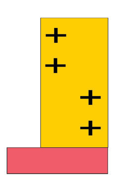
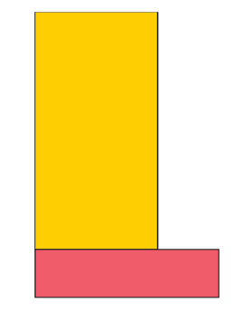
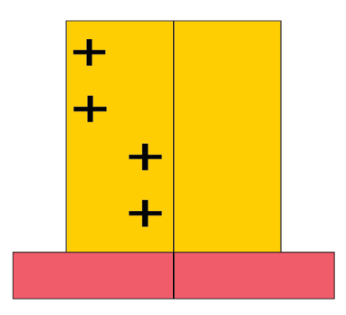
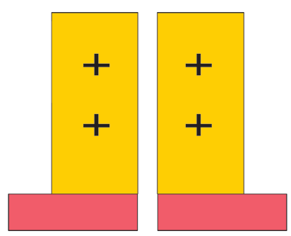
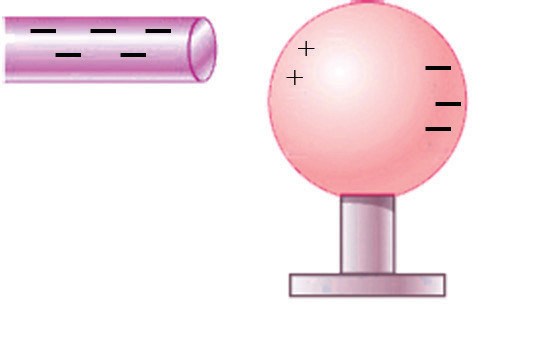
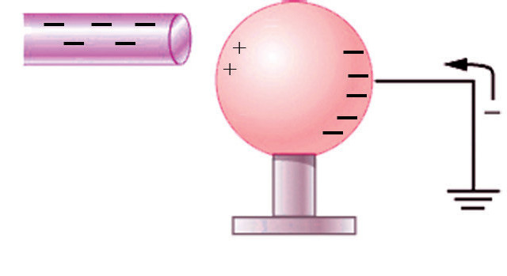
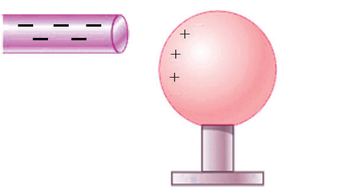
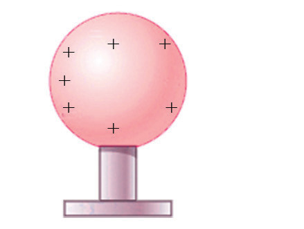

body. Consider two metal plates X and Y, where plate X is positively charged while plate Y is uncharged. Both plates are then placed on insulating blocks brought into contact and then separated as shown in Figure 1.12.




Testing the metal plates after separation shows that, when a charged body is brought in contact with an uncharged body, the same electric charges are distributed among the two bodies. As a result, the initially uncharged body acquires charges of the same sign as the charges of the initially charged body.
Charging by induction
Charging by induction is a method of charging an object without actually touching it with any other charged object. Figure 1.13 illustrates the simple steps to induce a charge by induction.




Step 1: A negatively charged rod is brought near the uncharged spherical ball. The free electrons from the sphere are repelled by the excess electrons on the rod, and they are shifted towards the right. They cannot escape from the sphere because the stand and the surrounding air are insulated.
Step 2: These excess charges, called induced charges, are released to the earth by touching the right part of the sphere with a wire and connecting the other part of the wire to the earth.
Step 3: The wire is disconnected.
Step 4: The negatively charged rod is removed. A net positive charge is left on the spherical ball.